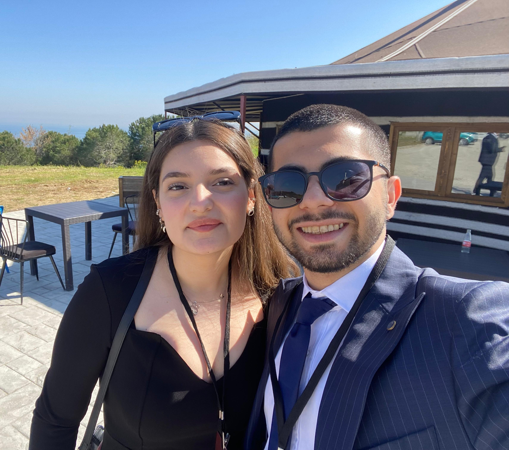

Söylediğim şey için gerçekten çok üzgünüm, fazla sinirlendim kabul ediyorum, gerçekten özür dilerim. Sürekli yanında olabilmek istiyorum her daim, her anında. Keşke bu tartışmalarımız hiç yaşanmasa, ben seninle sürekli mutlu kalmak istiyorum. Seni çok seviyorum.
Lütfen mikrofona üfle <3 💨
